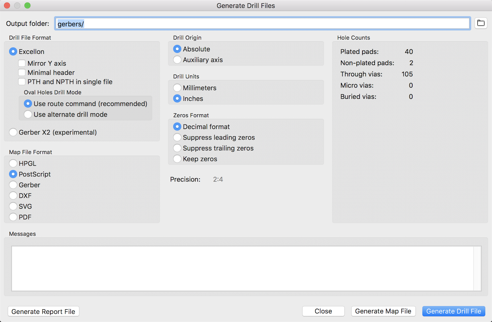
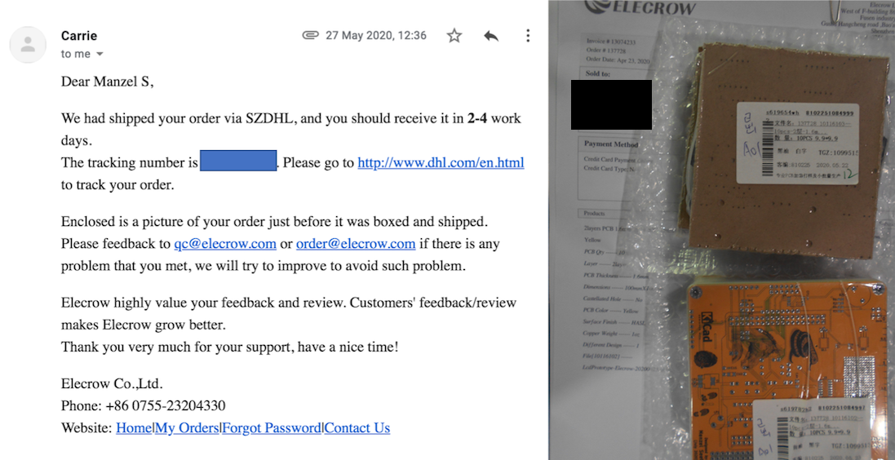

Elecrow PCB Review
Sat 20 June 2020
PCB design art is something I have been experimenting with. Recently, I used Elecrow PCB who offers yellow soldermask with black silkscreen without additional cost.
Introduction
There are many cheap prototype PCBs manufacturing services online. They can also produce boards in colors other than the conventional green.
I got interested when I found out that Elecrow PCB offers yellow soldermask with black silkscreen without additional cost.
In comparison, JLCPCB only has the option for yellow PCBs with white silkscreen. PCBway offers black-on-yellow but at a higher cost than white-on-yellow.
Review Objective
I decided to try out Elecrow PCB and I ordered 2 boards. I was surprised at how well they produced it for the price.
I am writing this blog post because I could not find any recent reviews on Elecrow PCB.
This review is not paid for and I hope to share as much of my personal experience with you.
Board Design
I designed both my boards in KiCad. These are the 3D renders and later on, let's see how it compares to the actual board received
My first board is a badge design of the Bare Bears cartoon series. I manually panalized it to fit within 100mm x 100mm.

One potential problem of this board will be the tight corner in between the bear's legs (the smallest width here is about 1mm). I read Elecrow PCB can do a 0.8mm contour routing so I hope it will turn out nicely.
Another possible difficulty will be the panalization. I later realized that the mouse-bite and the tabs may make the board flimsy and I wonder how they will deal with it during manufacturing.
My second board will be to try out the yellow soldermask.
In this board, I added a plated slot and prototyping spaces in thhe empty space on the left.
On the back, I added images and halftones. Halftone is a technique used in printing to produce a gradient of color by using dots of different sizes.
Gerber Generation
It would be great if Elecrow could provide some instructions on how to export the Gerber files to their requirements.
I had to search online to see what settings other people used. I took reference from these websites.
In the end, I used these settings without any issues.

After which, I renamed the Gerbers to the Elecrow filenames.
| Layer | KiCad Filename | Elecrow Filename |
|---|---|---|
| Top Copper | F_Cu.gtl | LcdPrototype.GTL |
| Bottom Copper | B_Cu.gbl | LcdPrototype.GBL |
| Top Soldermask | F_Mask.gts | LcdPrototype.GTS |
| Bottom Soldermask | B_Mask.gbs | LcdPrototype.GBS |
| Top Silkscreen | F_SilkS.gto | LcdPrototype.GTO |
| Bottom Silkscreen | B_SilkS.gbo | LcdPrototype.GBO |
| Non-Plated Drill Holes | NPTH.drl | LcdPrototype-NPTH.TXT |
| Plated Drill Holes | PTH.drl | LcdPrototype-PTH.TXT |
| Board Outline | Edge_Cuts.gm1 | LcdPrototype.GML |
Ordering Process
The website interface is simple. You specify details, such as the color, thickness and quantity.
I should mention that Elecrow provides $5 worth of loyalty points to offset your first purchase. I forgot to use it at that point of time, so remember to make use of the points.
I chose the cheapest shipping. Each design costs US$4.90 and shipping of US$10.47 to Singapore. In total, I paid US$20.27. I submitted my zip files and waited.
For the next few days, I heard no news. There's no feedback or progress indicator like JLCPCB or PCBway. I can only see that it is in production. Hence, I assumed there was no issue with my uploaded files.
After exactly a week (5 working days + 2 weekends), the status changed from "Production" to "Shipped".
Shipping Issues
If everything goes fine, Elecrow will send you an email with the tracking number and photos of the boards.
At the time when I ordered, it was during the COVID-19 global pandemic. Thus, my shipping experience has not been ideal due to delays and increased prices. Despite this, the Elecrow customer service has been very accommodating to me as I'll explain my story below.
In this case, I did not receive any email for one whole week before I decided to contact them. I got a reply and they told me that they will check with the post office.
The cheapest shipping option was PLT Express. Unfortunately, it so happened that they have suspended services due to the pandemic.
After a few emails back and forth, I was recommended to use Shenzhen DHL. I had to pay an additional $15.19 via their PayPal account.
And after they shipped it from there, they sent an email with the tracking number and photos of the boards.

Delivery
With DHL expedited shipping, it will cost me double the price per board. But it was still somewhat affordable, thus I decided to go with it.
This brought the total cost to US$35.46.
With Shenzhen DHL, the package travelled from China to Singapore in a mere 2 days!
This is a summary of my waiting time.
| Day | Date |
|---|---|
| 23 Apr | I placed an order |
| 5 May | Status on website changed to "Shipped" |
| 11 May | I emailed them to ask for tracking number |
| 12 May | They replied; they will follow up from the post office |
| 21 May | Informed me that PLT Express is suspended |
| 26 May | Package returned from post office & shipped using DHL that night |
| 28 May | Package arrived |
If you minus the time wasted due to shipping issues, I could hhave possibly gotten my package in slightly over a week with the fastest shipping.
First Impressions
Packaging
The box is filled with lots of bubble wrap and packaged very well.
As I said earlier, the BareBears board may be flimsy. I realized that Elecrow added pieces of hard cardboard before vacuum packing the PCBs in order to protect it during shipping.
Quantity
Many of these Chinese PCB manufacturers may sometimes throw in an additional board or two. Perhaps when if they have extra space on their production panel.
For both boards, I ordered only 10. I received 12 pieces of my panelized BareBear board. And to my surprise, I saw a whopping 16 pieces of my yellow PCBs!
Fine details
The one thing I like about Elecrow PCB is that they do not insert any order numbers or ID on your board.
It seems like the black soldermask is shiny, while the white silkscreen has a matte finish. I really love the matte white look.
Yellow soldermask looks quite dull on areas without copper. I wish I had done a polygon pour including the orphans/islands. The black silkscreen is shiny instead.
The halftone technique appears to work and it seems like they can do the really small dots too.
I'm amazed at the contour routing of the PCBs, especially the tight portion between the bear's legs. Although there is a dent at some areas (in this photo, the left foot has a dent in the middle).
Also, the milled slot is not entirely smooth and has some unevenness.
Soldered Board
I don't have any other complains for now, considering the low price for it's quality. So far I only soldered the Bare Bears board. This is how it looks like.
Conclusion
I think only the downside of Elecrow PCB might be their slightly slower production time and lack of live feedback on the production process.
There are many attractive features of Elecrow PCB. I particularly like their soldermask/silkscreen colours and the really flat HASL finish.
Do let me know if you find my review helpful. I hope to do more of such blog posts in the future.
Category: Electronics Tagged: PCB Elecrow